• Presentation •
Bonjour, je suis en seconde année de DUT informatique à l'IUT de Lannion.
Je suis à la recherche d'une alternance pour la rentrée scolaire de septembre 2022.
Je me suis orientée vers l'informatique car ça m'a toujours fasciné.
Faire un DUT informatique me semblait la meilleure option, je souhaitais faire de la pratique.
Je souhaite poursuivre mes études et je voulais une formation en alternance, je me suis donc orienté vers Sup de Vinci.
• Competences •
Programmation
C /
Java /
Python /
PHP

Base De Donnees
PostgreSQL / SQL
Web
HTML5 / CSS / Bootstrap / CodeIgniter

Systemes
Bash /
Awk /
Sed /
Shell

Conception
UML /
Maquettage /
Charte graphique
Gestion De Projet
Git /
Gantt /
Pert /
Méthodes Agiles (Scrum, Kanban)
Personnelles
Creativité /
Perséverance / autonomie
Langues
Anglais - B2 : aisance à l'écrit et vocabulaire technique
Allemand - A2 : base à l'écrit et à l'oral
• Projets •
2020 - Site web de gestion d'un catalogue de films et de compte utilisateur
Nous devions programmer un site en PHP intégrant une base de données avec le framework CodeIgniter. Ce site a été réalisé en duo.
C'était ma première réalisation d'un site dynamique ainsi que ma première utilisation de CodeIgniter. J'ai énormément apprécié le produire.
Rôle -Développeur
Compétences utilisées -
Gestion de projet: Gantt, Pert, Git
Conception: UML, charte graphique, maquettage
Programmation: Java, Javafx
Base de données: PostgreSQL
Acquis - Communication, Organisation
2020 - Logiciel de gestion des étudiant résidant au CROUS
Nous devions programmer un logiciel a l'aide de Java et Javafx. Nous avons voulu réaliser un site permettant de gerer la situation des étudiants au CROUS pendant le confinement.Pour réaliser ce logiciel nous étions 5.
Ce logiciel est pour la direction et les référents, qui prennent des nouvelles des étudiants, gèrent les fiches... Chaque étudiant possède sa propre fiche.
Nous avons dû tout d'abord faire la gestion du projet, c'est a dire répartir les rôles, visionner les différentes tâches, le temps qu'elles prendront. Pour ceci nous avons réaliser un Gantt, un Pert, et un diagramme de classe.
C'était mon premier logiciel, le projet n'a pas pu aboutir au résultat voulu, mais il possédait les fonctions de base que nous avions souhaité intégrer.
Rôle -Développeur
Compétences utilisées -
Gestion de projet: Gantt, Pert, Git
Conception: UML, charte graphique, maquettage
Programmation: Java, Javafx
Base de données: PostgreSQL
Acquis - Communication, Organisation
2020 - Site web "L'impact des jeux vidéos sur nos relations sociales"
Ce site web a été réalisé dans le cadre d'un projet a 4. Nous devions choisir une thématique en rapport avec les nouveautés technologiques et le social. Nous avons donc choisi "l'impact des jeux vidéo sur les relations sociales"
Pour réaliser ceci, nous avons tout d'abord fait des recherches. Une fois nos parties bien définies nous nous sommes lancés dans la réalisation de la charte graphique et du maquettage.
Enfin après avoir réalisé toutes ces étapes nécessaires nous avons commencé la programmation.
J'ai beaucoup apprécié réalisé un projet de a à z en équipe. C'était le premier site statique complet que j'ai réalisé.
Nous avons également eu l'occasion de le présenter à des professionnels lors d'un salon, pour lequel notre équipe avait été sélectionner parmi la promo.
Rôle -Intégrateur
Compétences utilisées -
Design: charte graphique, maquettage
Réalisation: HTML, CSS, Bootstrap, Javascript
Acquis - Créativité, Réflexion
2020 - Site web intégrant une animation d'un modèle 3D de Rubik's Cube
Ce projet était ma toute première expérience de projet informatique. Il a été réalisé en duo.
Il consiste à la création d'un modèle 3D ainsi que de son animation avec Blender, puis à la réalisation d'un site expliquant notre processus de réalisation.
J'ai donc dû à apprendre à me servir de Blender, ainsi qu'à réaliser un site web statique avec du HTML et CSS.
Ce projet a donc été assez complexe. Malgré ça j'ai beaucoup apprécié le challenge qu'il m'a apporté.
C'est grâce à ce projet que j'ai réalisé que j'appréciais la programmation, ce qui m'a poussé à m'orienter dans ce domaine.
Rôle -Développeur
Compétences utilisées -
Web: HTML, CSS
Modélisation 3D: Blender
Acquis -Autonomie